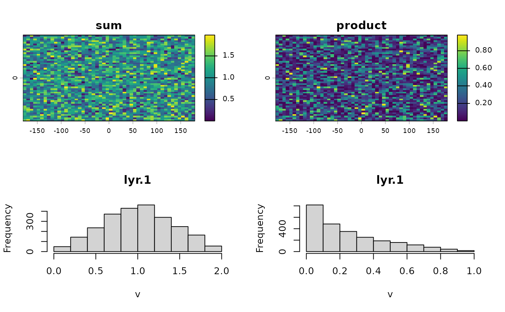
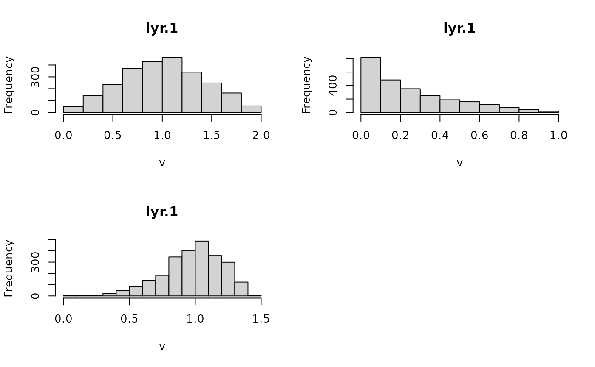

hist.RdCreate a histogram of the values of a SpatRaster. For large datasets a sample of maxcell is used.
# S4 method for class 'SpatRaster'
hist(x, layer, maxcell=1000000, plot=TRUE, maxnl=16, main, ...)SpatRaster
positive integer or character to indicate layer numbers (or names). If missing, all layers up to maxnl are used
integer. To regularly sample very large objects
logical. Plot the histogram or only return the histogram values
positive integer. The maximum number of layers to use. Ignored if layer is not missing
character. Main title(s) for the plot. Default is the value of names
additional arguments. See hist
This function is principally used for plotting a histogram, but it also returns an object of class "histogram" (invisibly if plot=TRUE).
r1 <- r2 <- rast(nrows=50, ncols=50)
values(r1) <- runif(ncell(r1))
values(r2) <- runif(ncell(r1))
rs <- r1 + r2
rp <- r1 * r2
opar <- par(no.readonly =TRUE)
par(mfrow=c(2,2))
plot(rs, main='sum')
plot(rp, main='product')
hist(rs)
a <- hist(rp)

a
#> $breaks
#> [1] 0.0 0.1 0.2 0.3 0.4 0.5 0.6 0.7 0.8 0.9 1.0
#>
#> $counts
#> [1] 816 483 352 250 188 159 117 76 42 17
#>
#> $density
#> [1] 3.264 1.932 1.408 1.000 0.752 0.636 0.468 0.304 0.168 0.068
#>
#> $mids
#> [1] 0.05 0.15 0.25 0.35 0.45 0.55 0.65 0.75 0.85 0.95
#>
#> $xname
#> [1] "lyr.1"
#>
#> $equidist
#> [1] TRUE
#>
#> attr(,"class")
#> [1] "histogram"
x <- c(rs, rp, sqrt(rs))
hist(x)
par(opar)
